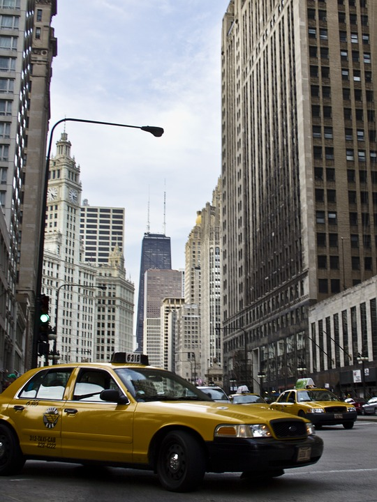
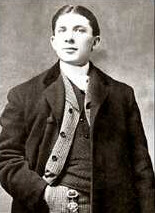

Chicago yellow cab

The Yellow Cab Company was a taxicab company in Chicago which was founded in 1907 by John D. Hertz.
In 1920 the Yellow Cab Manufacturing Company was formed to manufacture taxicabs.
During the 1910s and 1920s the company was involved in considerable illegal activity relating to mobsters and in particular to the Chicago Outfit. Yellow Cab was involved in a bitter rivalry with Checker Taxi at the time which led to a number of shootings, deaths and firebombings.
By 1925 the company was a subsidiary of the 'Chicago Yellow Cab Company', a public holding company with shares equally divided amongst Hertz, Parmelee and a small group of other investors. Hertz sold the Yellow Cab Manufacturing Company to General Motors in 1925. He sold his remaining interest in the Yellow Cab Company in 1929. Yellow Cab Co. (of Chicago) was bought by Morris Markin, who had established Checker Cab Manufacturing Company, with the Checker Taxi, a driver's cooperative.

John D. Hertz was an American businessman, thoroughbred racehorse owner and breeder, and philanthropist.
Born Schandor Herz April 10, 1879
Szklabinya, Austria-Hungary
Died October 8, 1961
Chicago, Illinois, U.S.
In 1925, Hertz held the following positions:
- President of the Yellow Cab Company
- Chairman Benzoline Motor Fuel Company
- Chairman Chicago Motor Coach Company
- Chairman Fifth Avenue Coach Company
- Chairman New York Transportation Company
- Chairman Omnibus Corporation of America
- Chairman Yellow Sleeve-Valve Engine Works
- Chairman Yellow Truck and Coach Manufacturing Company
In 1929 he sold his remaining share of Yellow Cab to concentrate on car rental (later Hertz Rent-a-Car which incidentally still uses a yellow logo). The sale was prompted by the violence associated with the business that culminated in 1928 in his racing stables being destroyed in a $200,000 fire.
Yellow Cab Co. was sold again in 1996 to Patton Corrigan, who in turn sold controlling interest in 2005 to Michael Levine, a third-generation taxicab operator from New York City. The Levine/Corrigan group has also purchased the Checker Taxi Affiliation in Chicago, to reunite the two companies once again. In 2015, Yellow Cab of Chicago filed for bankruptcy. Yellow Cab Co eventually split into multiple companies across the nation bearing the Yellow Cab name. In January 2016, San Francisco's Yellow Cab filed for bankruptcy protection.
Wikipédia: Yellow Cab Company
Wikipédia: John D. Hertz